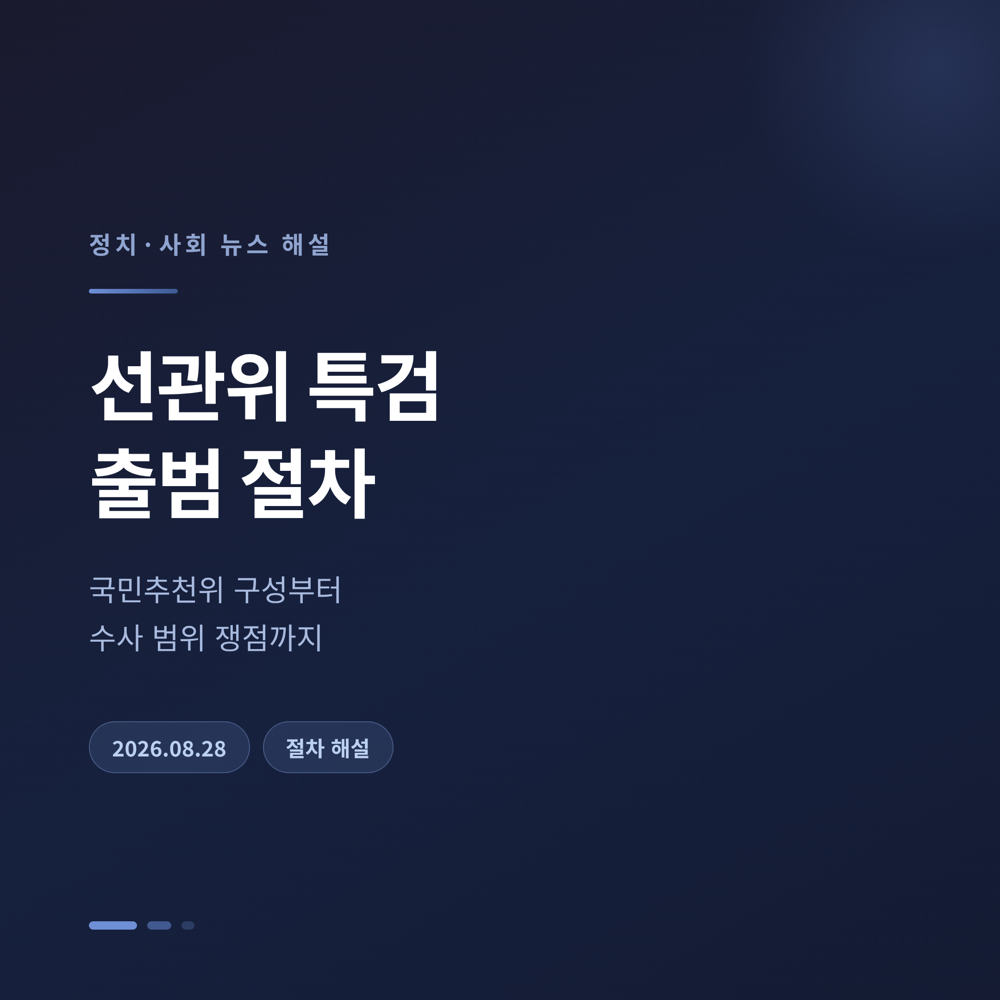
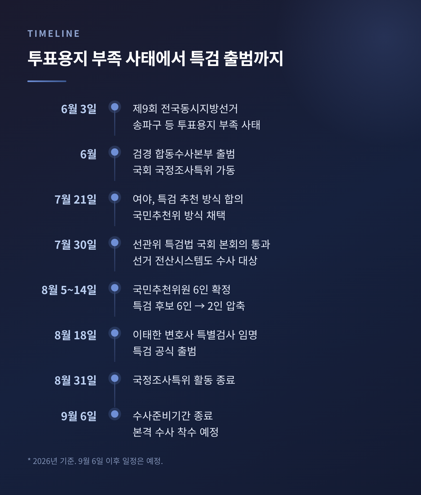
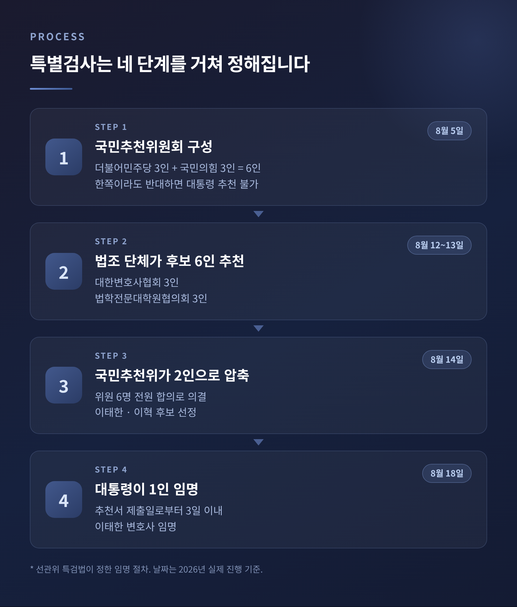
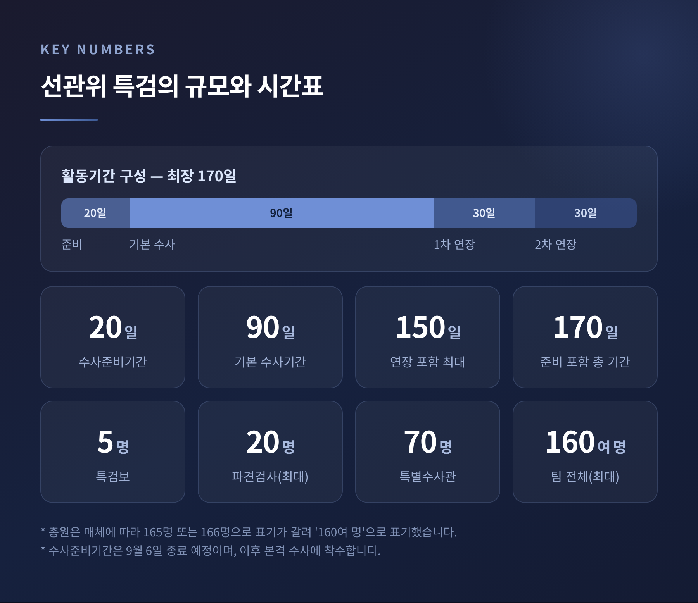
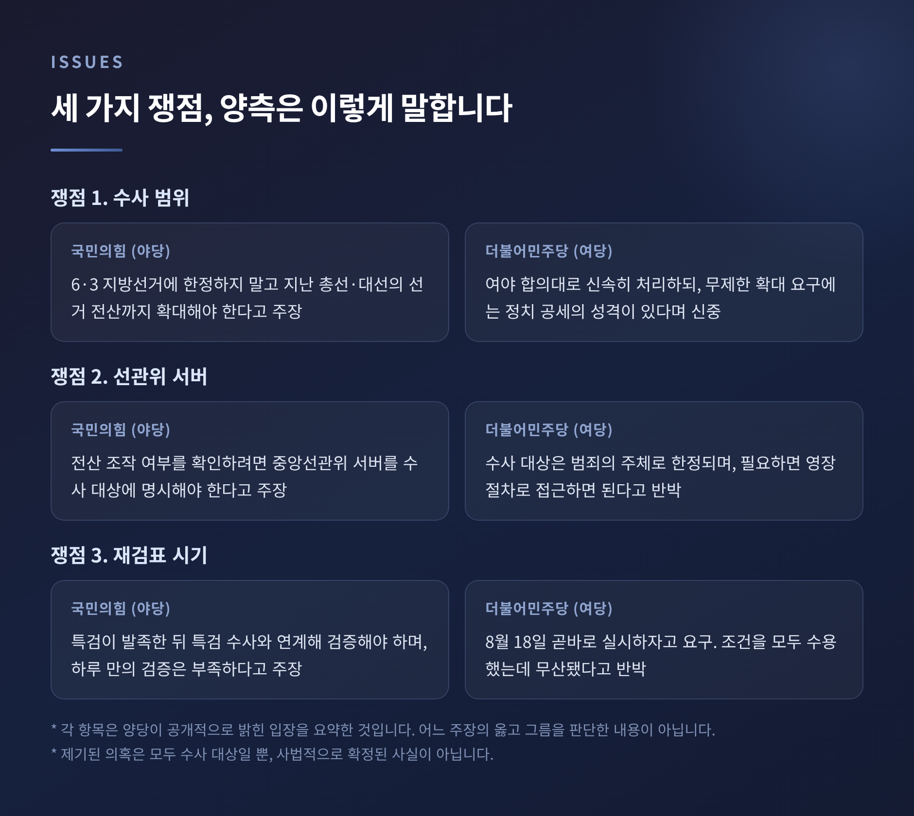
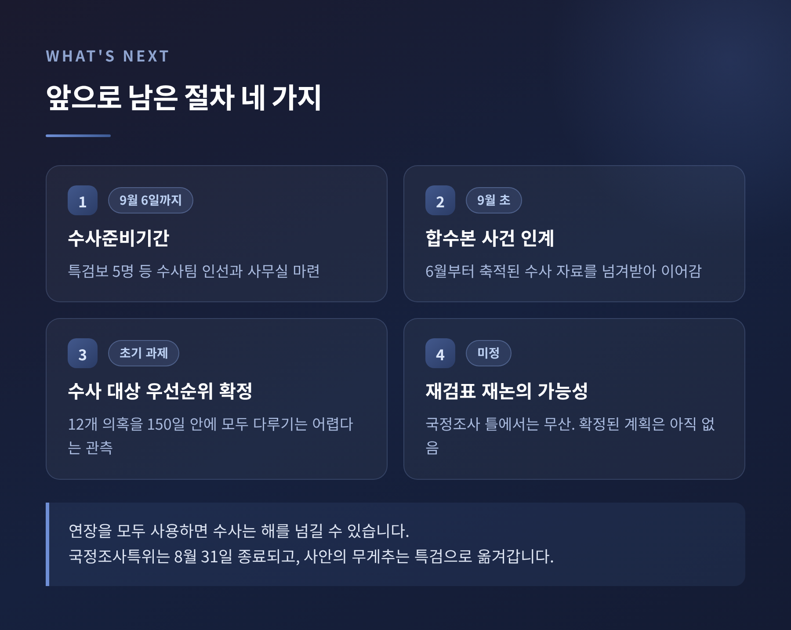

선관위 특검 출범 절차, 국민추천위 구성부터 수사 범위 쟁점까지

이번 글에서는 이른바 '선관위 특검'이 어떤 절차를 밟아 출범했는지 정리해 보겠습니다. 누구의 주장이 옳은지를 가리는 글이 아닙니다. 제도가 어떻게 설계돼 있고, 무엇이 쟁점이며, 앞으로 어떤 절차가 남았는지를 순서대로 짚어보려 합니다.
시작은 투표용지 부족 사태였습니다
2026년 6월 3일 제9회 전국동시지방선거 당일, 서울 송파구를 비롯한 일부 지역에서 투표용지가 모자라는 일이 벌어졌습니다. 유권자가 투표소에서 오래 기다리거나 발길을 돌리는 상황이 생기면서 참정권 침해 논란으로 번졌습니다.
대응은 세 갈래로 갈렸습니다. 6월에 검경 합동수사본부가 꾸려졌고, 국회는 국정조사특별위원회를 가동했으며, 여야는 별도로 특별검사 도입을 논의하기 시작했습니다.
특검법의 정식 명칭은 깁니다. '제9회 동시지방선거 투표용지 부족 사태 등 국민참정권 침해 의혹 진상규명을 위한 특별검사 임명 등에 관한 법률'입니다. 이름 그대로 출발점은 투표용지 부족이었습니다.
법안 처리는 비교적 빠르게 진행됐습니다. 7월 21일 여야가 특검 추천 방식에 합의했고, 7월 27일 국회 법제사법위원회 전체회의에 특검법안 네 건이 상정됐습니다. 그리고 7월 30일 본회의를 통과했습니다. 여야 합의 처리였습니다.

특검은 네 단계를 거쳐 정해졌습니다
이번 특검의 임명 절차는 다소 복잡합니다. 여당도 야당도 직접 특검을 지명하지 않는 구조이기 때문입니다.
첫째, 국민추천위원회를 만듭니다. 더불어민주당과 국민의힘이 각 3인씩, 모두 6인으로 구성합니다. 한쪽이라도 반대하는 후보는 대통령에게 추천할 수 없도록 했습니다. 사실상 서로에게 거부권을 준 셈입니다.
8월 5일 위원 명단이 확정됐습니다. 민주당은 조두현·조기연 변호사와 서강대 정치외교학과 교수 한 명을, 국민의힘은 김용관 변호사(전 서울중앙지법 부장판사), 최창호 변호사(전 서울남부지검 형사부장), 차진아 고려대 법학전문대학원 교수를 각각 추천했습니다.
둘째, 법조 직역 단체가 후보를 냅니다. 대한변호사협회가 3인, 법학전문대학원협의회가 3인, 모두 6인을 국민추천위에 올립니다. 정당이 아니라 제3의 전문가 집단이 후보 풀을 만드는 방식입니다.
셋째, 국민추천위가 6인 중 2인으로 압축합니다. 8월 14일 국회에서 열린 2차 회의에서 이태한·이혁 두 명으로 좁혔습니다. 위원 6명 전원 합의였습니다.
넷째, 대통령이 그중 한 명을 임명합니다. 법이 정한 기한은 추천서가 제출된 날로부터 3일입니다. 8월 18일 이재명 대통령이 이태한 변호사를 특별검사로 임명했습니다.

절차가 이렇게 설계된 이유
특검 제도에서 가장 예민한 대목은 '누가 특검을 고르느냐'입니다. 선거 관리 기관을 수사하는 특검이라면 더 그렇습니다. 어느 한쪽이 지명권을 쥐면 결과가 나오기 전부터 신뢰가 흔들립니다.
그래서 이번에는 후보 발굴을 법조 단체에 맡기고, 걸러내는 일은 여야가 함께하고, 마지막 선택만 대통령이 하도록 나눴습니다. 권한을 잘게 쪼개 어느 한 주체도 결론을 좌우하지 못하게 한 구조입니다.
다만 한계도 지적됐습니다. 변협과 법전협이 올린 후보 6명이 모두 검사 출신이었다는 점입니다. 절차의 다원성과 인선의 다양성은 별개라는 이야기가 나온 배경입니다.
임명된 이태한 특검은 사법연수원 23기로, 검찰에서 19년가량 특수·형사·공판 부서를 거친 인물입니다. 취임 당시 그는 "특검의 역할은 의혹을 확대하는 게 아니라 의혹을 해소하는 것"이라며 "여당이나 야당 어느 쪽에도 불리한 결론을 미리 정해놓고 수사하지 않겠다"고 밝혔습니다.
규모와 시간표
특검팀은 작지 않습니다. 특별검사 1명에 특검보 5명, 파견검사 최대 20명, 특별수사관 70명, 파견공무원 최대 70명까지 둘 수 있습니다. 매체에 따라 총원 표기가 조금 다르지만 최대 160여 명 규모입니다.
시간은 이렇게 짜여 있습니다. 먼저 수사준비기간이 최장 20일 주어집니다. 특검보를 고르고 사무실을 마련하는 기간입니다. 이후 기본 수사기간 90일, 필요하면 30일씩 두 차례 연장해 최장 150일입니다. 준비기간까지 더하면 최장 170일입니다.
특검은 9월 6일까지 준비를 마치고 본격 수사에 들어갈 계획으로 알려졌습니다. 8월 19일에는 합동수사본부를 찾아 사건 인계 절차를 시작했습니다.

쟁점 하나 — 어디까지 수사할 것인가
특검법이 정한 수사 대상은 투표용지 부족 하나가 아닙니다. 선거 통계 입력과 정정 방식, 투표용지 인쇄 물량 하한 기준을 낮춘 과정의 절차 문제, 선거관리 시스템 전산 문제, 부정 채용과 승진 특혜, 외유성 해외출장, 수의계약 특혜와 업체 유착 등 이른바 '12개 의혹'이 함께 묶였습니다.
문제는 범위입니다. 특검법의 선거관리 시스템 관련 조항이 6·3 지방선거로 명시적으로 한정돼 있지 않다는 해석이 나오면서, 지난 총선이나 대선까지 수사 대상이 될 수 있다는 이야기가 이어졌습니다.
국민의힘은 확대를 요구했습니다. 당 선관위개혁특위는 "투표자 수 조작은 부실이 아니라 부정"이라며 대선 전산까지 특검이 들여다봐야 한다고 주장했습니다. 장동혁 대표는 선관위 해체와 사전투표 폐지론까지 함께 제기했습니다.
더불어민주당은 신중했습니다. 여야가 합의한 대로 특검법을 신속히 처리하자면서도, 수사 범위를 무한정 넓히자는 요구에는 정치 공세의 성격이 있다고 보고 경계했습니다.
여기서 한 가지는 분명히 해둘 필요가 있습니다. 12개 항목은 모두 '수사 대상'일 뿐, 사법적으로 확정된 사실이 아닙니다. 의혹이 제기됐고 이제 조사가 시작된 단계입니다.
쟁점 둘 — 선관위 서버
가장 첨예했던 대목입니다.
국민의힘은 중앙선관위 서버를 수사 대상에 반드시 넣어야 한다고 주장했습니다. 전산 조작 여부를 확인하려면 서버를 직접 봐야 한다는 논리였습니다.
더불어민주당은 다르게 봤습니다. 수사 대상은 범죄의 주체로 한정되므로 서버 자체는 수사 대상이 아니라는 것입니다. 선관위 직원이 서버를 이용해 범죄를 저질렀다면 검찰이 영장을 청구하고 법원이 발부하는 절차로 접근하면 된다는 설명이었습니다. 민주당 원내지도부에서는 서버를 못 박는 방식이 자칫 부정선거를 주장해온 쪽의 논리로 읽힐 수 있다는 우려도 나왔습니다.
결과적으로 7월 30일 합의된 특검법에는 선거 전산시스템이 수사 대상에 포함됐습니다. 다만 서버에 어떤 방식으로, 어디까지 접근할지는 여전히 해석의 영역으로 남아 있습니다.
쟁점 셋 — 올림픽공원 투표지 247만 장
서울 송파구 올림픽공원 개표소에는 6·3 지방선거 투표용지 약 247만 장이 보관돼 있습니다. 이 투표지를 공개 재검표할 것인지가 8월 내내 국정조사특위의 뇌관이었습니다.
재검표를 먼저 제안한 쪽은 국민의힘이었습니다. 그런데 시기를 놓고 입장이 갈렸습니다. 민주당은 8월 18일에 곧바로 실시하자고 했고, 국민의힘은 특검이 발족한 뒤 특검 수사와 연계해야 한다고 맞섰습니다.
8월 26일 특검 측이 국조특위에 공문을 보냈습니다. 현장 검증에서 이상 투표용지가 나올 경우 증거가 훼손되지 않도록 증거 확보 조치를 보장해 달라는 취지였습니다.
같은 공문을 두고 해석이 정반대였습니다. 민주당과 조국혁신당은 "특검과 협의가 완료됐다"며 즉각 재검표를 요구했습니다. 윤건영 민주당 간사는 국민의힘이 조건을 계속 바꿔왔다며 "요구한 모든 조건을 들어줬다"고 주장했습니다.
국민의힘은 반대로 읽었습니다. 주진우 의원은 특검이 증거인멸을 우려해 협조의 전제조건을 알려온 것이라고 설명했습니다. 그는 "선관위 주도로 하루 만에 247만 표를 정밀 감식하는 게 제대로 된 검증이냐"고 반문하며, 회의를 열어 구체적 방법을 짜자는 제안을 민주당이 거부했다고 맞받았습니다.

국정조사는 이렇게 마무리됩니다
국정조사특위는 75일간 활동했고 8월 31일 종료됩니다. 예전에는 국정조사가 이 사안의 중심이었습니다. 지금은 무게추가 특검으로 완전히 옮겨간 모양새입니다.
결과보고서 채택도 불투명해졌습니다. 국민의힘은 재검표와 별개로 보고서를 채택하자는 입장이고, 민주당은 재검표가 무산된 마당에 나머지 절차는 의미가 크지 않다는 입장입니다. 양쪽 모두 상대에게 책임을 돌리고 있습니다.
남은 절차와 전망
앞으로 이어질 순서는 대체로 정해져 있습니다.
첫째, 9월 6일까지 수사준비기간입니다. 특검보 5명을 포함한 수사팀 인선과 사무실 마련이 이 기간에 이뤄집니다.
둘째, 합동수사본부가 6월부터 쌓아온 자료를 넘겨받는 인계 작업입니다.
셋째, 수사 대상의 우선순위를 정하는 일입니다. 12개 의혹을 150일 안에 모두 다루기는 어렵다는 것이 대체적인 관측입니다. 무엇을 먼저 볼 것인지가 사실상 첫 과제로 꼽힙니다.
넷째, 재검표 문제입니다. 국정조사 틀에서는 무산됐지만 특검 수사 과정에서 증거 확보 차원의 검증이 다시 논의될 여지는 남아 있습니다. 다만 확정된 계획은 아직 없습니다.
기간을 산술적으로 계산하면 연장을 모두 쓸 경우 수사는 해를 넘길 수 있습니다.

정리하면 이렇습니다. 특검을 뽑는 절차는 여야 합의로 마무리됐지만, 무엇을 어디까지 수사할 것인지에 대한 합의는 아직 없습니다. 절차가 끝난 자리에서 내용을 둘러싼 다툼이 다시 시작된 셈입니다.
그래서 지금 필요한 것은 하나입니다 — 결론을 미리 정해두지 않는 태도.
의혹은 제기됐고 수사는 이제 시작입니다. 무엇이 사실로 밝혀질지 물으신다면, 아직은 기다려야 한다고 답하겠습니다.